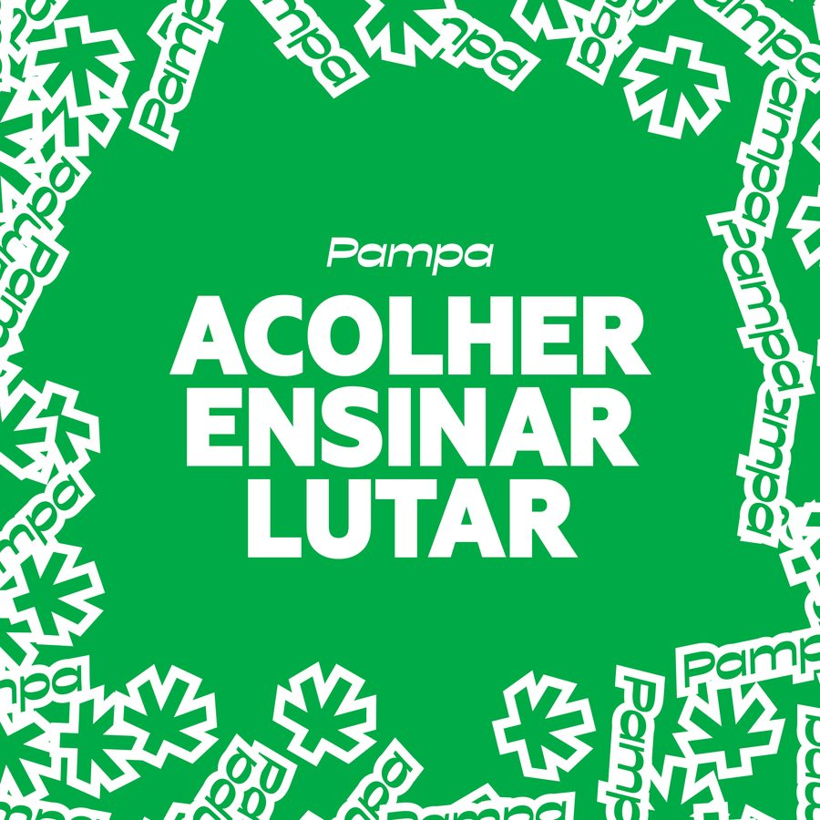

Uma associação sediada em Guaíba/RS, formada por pacientes, cuidadores e voluntários dedicados ao acesso justo à cannabis medicinal — atendendo também pacientes de Porto Alegre e de toda a Região Metropolitana.
A P.A.M.P.A. (Pacientes Associados por Medicina, Política e Autocultivo) nasceu em Guaíba/RS de uma convicção simples: quem precisa da cannabis para viver melhor não deveria enfrentar esse caminho sozinho, sem informação ou à margem da lei. Somos uma associação canábica sem fins lucrativos, com CNPJ e estatuto registrados, formada por pacientes, familiares, cuidadores e voluntários.
Acolhemos pacientes de Guaíba, de Porto Alegre e de todo o Rio Grande do Sul. Garantimos acesso aos tratamentos mediante prescrição de profissional habilitado.
Cuidar, para nós, vai além do frasco. Por isso também ensinamos, levando informação séria sobre cannabis medicinal, legislação e autocultivo. E lutamos para que o acesso ao tratamento seja garantido pelo poder público, como determina o art. 196 da Constituição, e deixe de depender da renda ou da coragem de cada paciente.

Recebemos cada paciente e sua família com escuta e cuidado, ajudando a entender o processo de tratamento com cannabis desde o primeiro contato.
Compartilhamos informação de qualidade sobre cannabis medicinal, sistema endocanabinoide, legislação e boas práticas de autocultivo.
Participamos ativamente da construção de políticas públicas municipais e estaduais que garantam acesso gratuito e seguro ao tratamento canábico.
Uma das frentes da P.A.M.P.A. é estruturar o cultivo associativo de cannabis, mediante autorização judicial, para reduzir o custo do tratamento e garantir a qualidade dos produtos oferecidos aos associados. É um processo gradual, construído com responsabilidade jurídica e técnica — dos primeiros ciclos de cultivo até um espaço próprio e certificado.
Em agosto, participamos da audiência pública na Câmara de Vereadores de Guaíba para apresentar o Projeto de Lei 023/2024, protocolado pelo vereador João Caldas. O projeto cria o Programa Municipal de Uso de Cannabis para Fins Medicinais, reconhecendo o direito do paciente a receber, gratuitamente, do poder público municipal, medicamentos à base de cannabis — com base no art. 196 da Constituição Federal (direito à saúde).
Associe-se à P.A.M.P.A. e tenha acolhimento, orientação e apoio em todas as etapas do seu tratamento.
 Pampa
Pampa